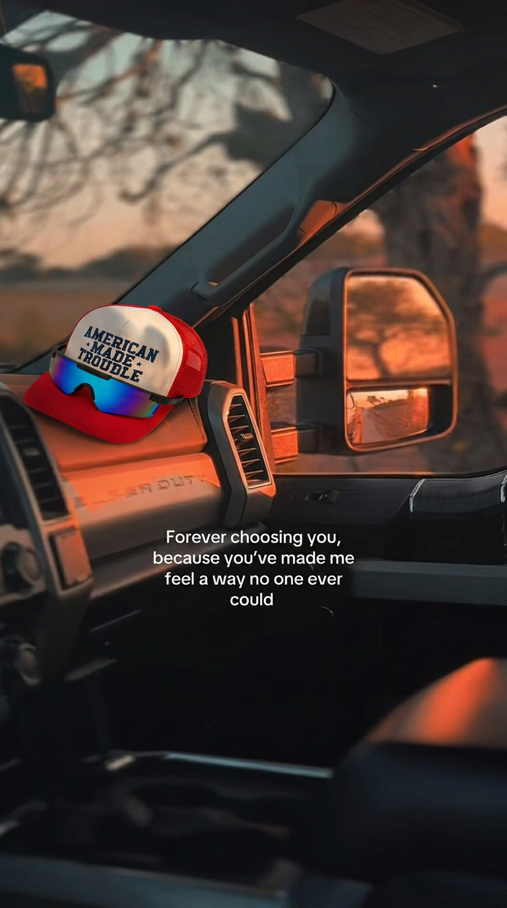

NanoBanana Pro / outputResearch report · Hat and sunglasses product placement 2.0
Hat and sunglasses product placement 2.0
A second-round comparison of image models attempting to insert the Hat + sunglasses product into an existing truck-interior screenshot.
Readout
NanoBanana Pro and NanoBanana 2.0 look unnatural and too perfect. Even with detailed instructions about preserving the original screenshot, matching lighting, and respecting contact physics, both models produced inserts that felt overly polished rather than incidental.
Seedream 5.0 Pro is not viable in this test. The hat is comically oversized and dominates the frame.
Models tested
| Model | Outputs | Result |
|---|---|---|
| NanoBanana Pro | 3 | Unnatural and too perfect despite detailed prompting. |
| NanoBanana 2.0 | 3 | Similar issue: polished, synthetic-looking placement. |
| Seedream 5.0 Pro | 1 | Terrible for this test; inserts a comically large hat. |
Capability constraints
Kling O1: cannot accept image uploads in this workflow.
Recraft V4.1: also cannot accept image uploads.
Grok Imagine: no image upload capability for this test.
Soul Cinema models: support characters, but not inanimate-object placement.
Evidence outputs
Open a model to view its complete output set.
NanoBanana Pro · 3 outputs
NanoBanana 2.0 · 3 outputs
Seedream 5.0 Pro · 1 output
Prompt used for every model
Edit the provided car screenshot directly and use that exact image as the base—do not generate a new scene, do not alter the composition, and do not redesign or reinterpret the truck interior, phone UI, sunset environment, mirror reflection, dashboard, text overlay, or framing in any noticeable way; the goal is to insert the hat and sunglasses product into the existing screenshot so naturally that it feels like the product was already present when the photo was taken. Place the hat and sunglasses on the dashboard in a believable, casual position, not floating, not hovering, not overly staged, and not arranged like a commercial tabletop product display; it should feel like a real person set it down there naturally during the moment captured in the screenshot. The product must be scaled correctly relative to the dashboard, vent, windshield, mirror, and surrounding interior elements, so it does not appear too large, too small, or visually pasted in, and it should sit with realistic weight and contact on the surface, including proper contact shadows, natural pressure points, correct occlusion where the product meets the dashboard, and perspective that fully matches the original camera angle. Make sure the hat is flattering but still organic: it should not look unnaturally perfect, hyper-styled, or suspiciously centered for display, and the frame should not feel like it was composed around the product; instead, the product should exist within the scene in a seamless, incidental way, as part of the environment rather than the sole subject of a synthetic-looking insert. Match the original lighting exactly, including the warm golden-hour sunlight direction, softness, intensity, contrast, color temperature, and ambient bounce light coming from both the sunset outside and the darker truck interior, and ensure the sunglasses pick up believable reflections that are consistent with the window light, dashboard position, and surrounding cabin. The image should retain a candid iPhone-like realism—natural softness, believable dynamic range, mild imperfections, and an organic photographic feel—rather than looking over-rendered, hyper-detailed, overly sharp, or CGI-clean. Keep the product appealing and visually flattering, but avoid making it look too pristine, too polished, or too new in a fake way; add subtle real-world naturalism such as slight fabric relaxation, minor ruffling, tiny irregularities in the hat’s shape, and very light asymmetry that suggests actual use, while still keeping the hat structurally sound, attractive, and not bent, crushed, folded, sloppy, or worn out. The sunglasses should rest naturally on the visor with proper orientation and believable contact, wrapping the hat in a physically convincing way without appearing duplicated, warped, detached, floating, or unnaturally symmetrical. Preserve all original screenshot elements—including the UI, text, time, icons, progress bar, truck interior details, outdoor scenery, and mirror reflection—and only add the hat and sunglasses in a way that blends completely into the existing image, with no artificial glow, no cutout edges, no suspicious sharpness mismatch, no fake studio lighting, and no sense that the image was recomposed; the final result should feel like a real, naturally captured screenshot where the product simply happened to be sitting on the dashboard the whole time.